pacman::p_load(car,
dplyr,
effectsize,
emmeans,
fastGraph,
ggplot2,
ggpubr,
ggsci,
kableExtra,
knitr,
readxl,
rstatix)13 Análise de Variância
13.1 Pacotes necessários para este capítulo
13.2 Por que realizar uma ANOVA?
Inicialmente, para analisar os grupos, se ficaria tentado a fazer comparações por pares usando um teste t de amostras independentes. Com existem quatro grupos, é possível compará-los realizando seis testes, grupo 1 versus grupo 2, grupo 1 versus grupo 3, grupo 1 versus grupo 4, grupo 2 versus grupo 3, grupo 2 versus grupo 4 e grupo 3 versus grupo 4. Se os dados têm k grupos são necessários \(\frac {k!}{2!(k-2)!}\) testes.
A probabilidade de um erro do tipo I não ocorrer para cada teste t é de 0,95 (isto é, 1 – 0,05), supondo um \(\alpha\) = 0,05. Os três testes são independentes; portanto, a probabilidade de um erro do tipo I não ocorrer nos seis testes é de \((0,95)^6 = 0,735\). Dessa maneira, a probabilidade de ocorrer pelo menos um erro do tipo I nos seis testes t de duas amostras é de 1 – 0,735 ou 0,265 (26,5%), o que é mais alto do que o nível de significância definido de 0,05 (1).
Logo, uma ANOVA de um fator é usada para verificar as diferenças entre vários grupos dentro de um fator, reduzindo assim o número de comparações em pares e a probabilidade de ocorrer um erro tipo I.
13.2.1 Lógica do Modelo da ANOVA
O procedimento de ANOVA é utilizado para testar a hipótese nula de que as médias de três 1 ou mais populações são as mesmas contra hipótese alternativa de que nem todas as médias são iguais.
Na Seção 12.2.4.2, foram comparadas duas variâncias, usando um teste, denominado de teste F. Este teste, é uma razão entre duas variâncias e recebeu este nome em homenagem a Sir Ronald Aylmer Fisher (veja a Seção 1.2. A variância é uma medida de dispersão que mensura como os dados estão espalhados em torno da média (veja Seção 6.3.4.3 ) . Quanto maior o seu valor, maior a dispersão.
Considere a Figura 13.1, onde está representada a distribuição de uma variável X em três grupos independentes. Pode-se, claramente, distinguir observações provenientes dessas distribuições, pois a sobreposição delas é pequena. Cada uma dela se dispersa pouco em torno da média.
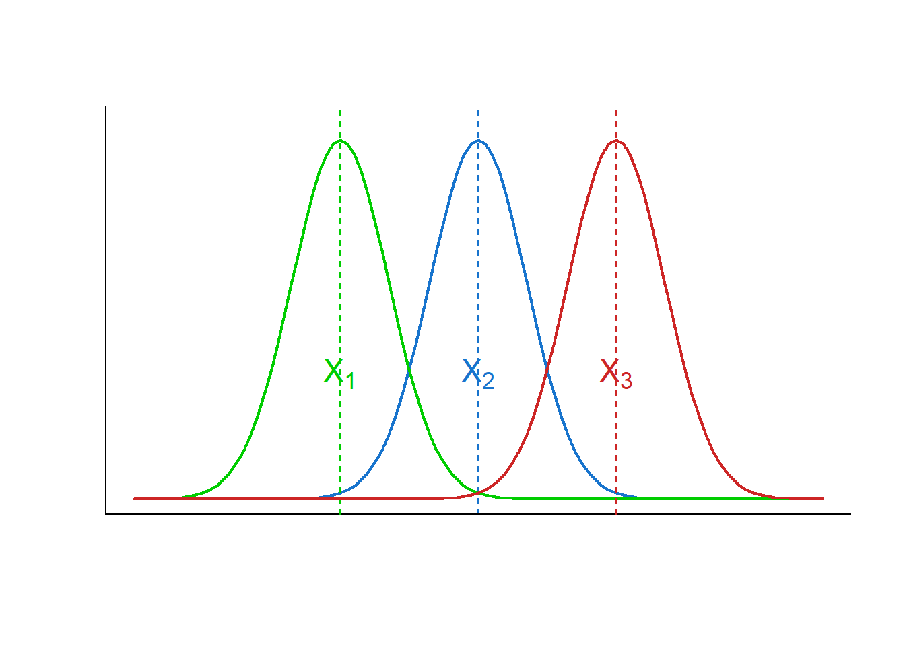
Agora, observe o Figura 13.2, onde a distribuição da variável X é mostrada, mantendo as mesmas médias, mas com variâncias maiores. Isto torna claro que se o objetivo é distinguir observações provenientes desses grupos não basta avaliar suas médias, há necessidade de comparar a variação entre os grupos com a variação dentro de cada grupo (2).
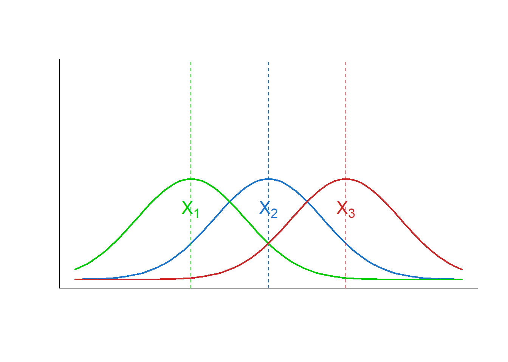
Se a variação entre os grupos for grande quando comparada à variação dentro de cada grupo, aumenta a probabilidade de reconhecer a proveniência das observações (Figura 13.1). Entretanto, se a variação entre os grupos for pequena comparada à variação dentro do grupo, torna difícil a distinção de observações provenientes dos grupos (Figura 13.2).
Portanto, usar o teste F para determinar se as médias de grupo são iguais é apenas uma questão de incluir as variâncias corretas na razão. Na ANOVA com um fator, a estatística F é a razão dos estimadores das variâncias entre e dentro dos grupos.
\[ F = \frac{variância \quad ENTRE \quad os \quad grupos}{variância \quad DENTRO \quad dos \quad grupos} \]
Quando o valor de F fica próximo de 1, significa que as variâncias são muito próximas; quando F é significativamente maior do que 1, é possível distinguir os indivíduos de diferentes grupos. Ou seja, se o objetivo for mostrar que as médias são diferentes, será bom que a variância dentro dos grupos seja baixa. Pode-se pensar na variância dentro do grupo como o ruído que pode obscurecer a diferença entre os sons (as médias). No gráfico da Figura 13.1, o valor de F seria alto; no da Figura 13.2, seria baixo.
Como saber se o valor de F é alto o suficiente? Um único valor F é difícil de interpretar sozinho. Há necessidade de colocá-lo em um contexto maior antes que seja possível interpretá-lo. Para fazer isso, usa-se a distribuição F para calcular as probabilidades.
13.2.2 Distribuição F
A razão entre a variabilidade entre os grupos e a variabilidade dentro do grupo segue uma distribuição F quando a hipótese nula é verdadeira. Quando se realiza uma ANOVA com um fator obtém-se um valor F. No entanto, se forem extraídas várias amostras aleatórias do mesmo tamanho da mesma população e fosse repetida a mesma análise, o resultado seriam muitos valores F diferentes, constituindo uma distribuição amostral, denominada de distribuição F.
Dessa forma, como a distribuição F assume que a hipótese nula é verdadeira, é possível colocar o resultado de qualquer valor F, resultante do teste de ANOVA, e determinar quão consistente ele é com a hipótese nula e calcular a probabilidade. A probabilidade que se quer calcular é a probabilidade de observar uma estatística F que é pelo menos tão alta quanto o valor que o estudo obteve. Essa probabilidade permite determinar quão comum ou raro é o valor F, sob a suposição de que a hipótese nula é verdadeira. Se a probabilidade for pequena o suficiente, pode-se concluir que dados são inconsistentes com a hipótese nula. Como já foi mostrado em outros momentos, essa probabilidade é o valor P (Seção 11.6).
O formato de uma curva de distribuição F depende do número de graus de liberdade. No entanto, a distribuição F tem dois números de graus de liberdade: graus de liberdade para o numerador (variância entre) e graus de liberdade para o denominador (variância dentro). Esses dois graus de liberdade são os parâmetros da distribuição F. Cada combinação de graus de liberdade fornece uma curva de distribuição F diferente. As unidades de uma distribuição F são denotadas por F, que assume apenas valores positivos. Como as distribuições normal, t e qui-quadrado (veja Seção 16.2), a distribuição F é uma distribuição contínua. A forma de uma curva de distribuição F é inclinada para à direita, mas a assimetria diminui à medida que o número de graus de liberdade aumenta, conforme observado na Figura 13.3.
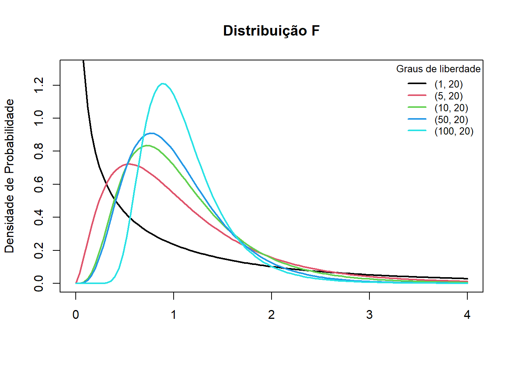
13.2.2.1 Funções do R para trabalhar com a distribuição F
No R, existem quatro funções principais para trabalhar com a distribuição F:
df(x, gl1,gl2)calcula a densidade de probabilidade da distribuição F no ponto x; df1 e df2 são os graus de liberdade do numerador e denominador, respectivamente 2 ;pf(x, gl1, gl2)calcula a função de probabilidade acumulada da distribuição F no ponto x;qf(p, gl1, gl2)calcula o quantil da distribuição F correspondente a uma probabilidade p;rf(n, gl1, gl2)gera n valores aleatórios da distribuição F com os parâmetros gl1 e gl2.
Essas funções são úteis para resolver problemas de probabilidade envolvendo a distribuição F. Por exemplo, se o objetivo é saber qual é a probabilidade de uma variável aleatória F com 10 e 20 graus de liberdade no numerador e no denominador, respectivamente, ser menor que 1, pode-se usar a função pf() da seguinte forma:
x <- 1
p <- pf(x, 10, 20,lower.tail = TRUE)
round(p, 3)[1] 0.524Ou seja, ao se observar a curva da Figura 13.3 de cor verde (gl1 = 10 e gl2 = 20), a probabilidade abaixo de x = 1 é igual a 52,4%.
Para calcular a densidade de probabilidade quando x = 1, pode-se usar a função df():
x <- 1
d <- df(x, 10, 20)
round(d, 3)[1] 0.714A saída da função df() corresponde à altura da curva da Figura 13.3 de cor verde (gl1 = 10 e gl2 = 20) quando x é igual a 1.
Para encontrar o valor da distribuição F(10,20) que corresponde ao percentil 50%, ou seja, o valor que deixa 50% da área da curva à esquerda, usa-se a função qf() com lower.tail=TRUE. Assim:
p <- 0.50
x <- qf(p, 10, 20, lower.tail = TRUE)
round(x,3) [1] 0.966Para representar, graficamente, esse resultado, foi construido o gráfico da Figura 13.4 com a função shadeDist() do pacote fastGraph (3) , verifica-se que a área sob a curva abaixo de 0,97 é igual a 50%. Consulte a ajuda do RStudio para maiores detalhes dos argumentos da função.
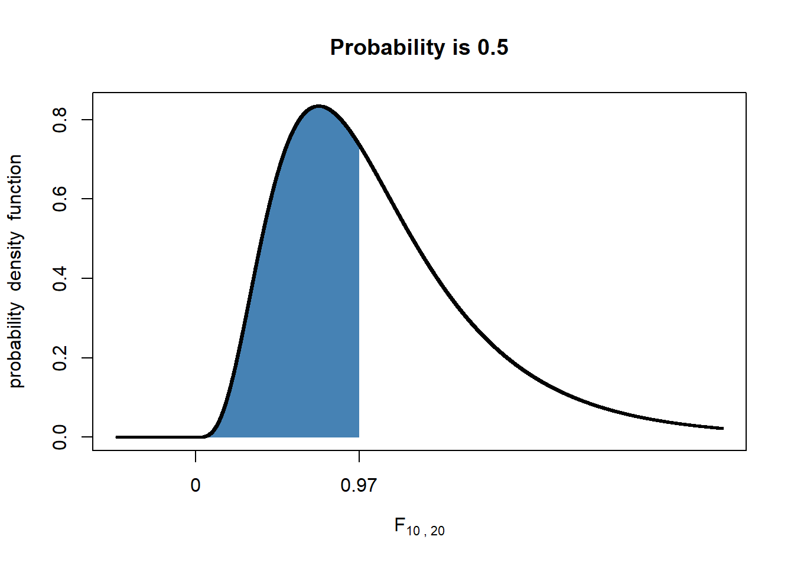
Para gerar 100.000 valores aleatórios da distribuição F com gl1=10 e gl2=20,será usada a função rf(). Em seguida, plota-se um histograma (Figura 13.5) com curva da distribuição F sobreposta (linha vermelha) e compara-se com a função de densidade de probabilidade da distribuição F (curva verde da Figura 13.3).
x <- rf(100000, df1 = 10, df2 = 20)
hist(x,
breaks = 'Scott',
freq = FALSE,
xlim = c(0,3),
ylim = c(0,1),
ylab = "Densidade",
xlab = '',
main = 'Histograma para uma distribuição F(10,20)',
cex.main=0.9)
curve(df(x, df1 = 10, df2 = 20),
from = 0,
to = 4,
n = 5000,
col= 'red',
lwd=2, add = T)
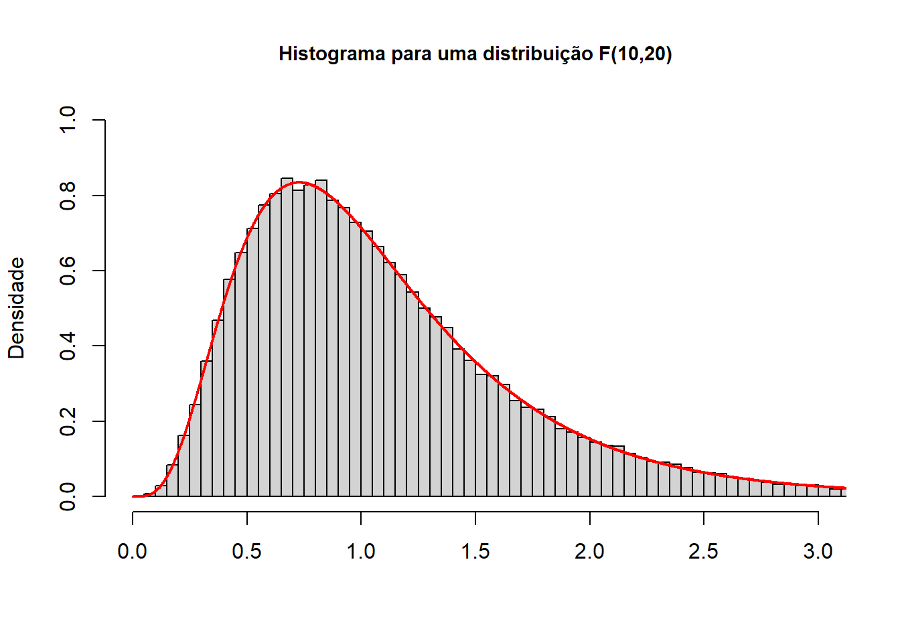
13.3 ANOVA de um fator
A análise de variância (ANOVA) de um fator, também conhecida como ANOVA de uma via, é uma extensão do teste t independente para comparar duas médias em uma situação em que há mais de dois grupos. Dito de outra forma, o teste t para uso com duas amostras independentes é um caso especial da análise de variância de uma via.
A ANOVA de um fator compara o efeito de uma variável preditora (variável independente, fator) sobre uma variável contínua (desfecho). Por exemplo, verificar se a intensidade do tabagismo na gestação (não fumantes, fumantes leves, moderados ou pesados) afetam o peso dos recém-nascidos Figura 13.6.
13.3.1 Dados do exemplo
Para testar a hipótese de que a intensidade do tabagismo materno tem efeito sobre o peso do recém-nascido, foram selecionados aleatoriamente 200 recém-nascidos classificados em quatro grupos de n = 50 cada grupo, conforme a quantidade de cigarros fumados por dia por suas mães.
- Grupo 1: recém-nascidos de mães não fumantes;
- Grupo 2: recém-nascidos de mães que fumavam até 10 cigarros/dia – categorizado como tabagismo leve;
- Grupo 3: recém-nascidos de mães que fumavam de 11 a 19 cigarros/dia – categorizado como tabagismo moderado;
- Grupo 4: recém-nascidos de mães que fumavam \(\ge\) 20 cigarros por dia – categorizado como tabagismo pesado.
Estes dados estão no arquivo dadosFumo.xlsx. Para baixar o banco de dados, clique aqui. Salve o mesmo no seu diretório de trabalho.
13.3.1.1 Leitura dos dados
A leitura será feita com a função read_excel() do pacote readxl e serão atribuídos a um objeto de nome dados e verificada a sua estrutura com a função str().
dados <- readxl::read_excel("dados/dadosFumo.xlsx")
str (dados)tibble [200 × 3] (S3: tbl_df/tbl/data.frame)
$ id : num [1:200] 1 2 3 4 5 6 7 8 9 10 ...
$ pesoRN: num [1:200] 3458 2723 4125 2905 3608 ...
$ fumo : num [1:200] 1 1 1 1 1 1 1 1 1 1 ...13.3.1.2 Exploração e resumo dos dados
Como a variável fumo encontra-se como uma variável numérica, será transformada em fator que é a sua verdadeira classe com 4 níveis.
dados$fumo <- factor (dados$fumo,
ordered = TRUE,
levels = c(1, 2, 3, 4),
labels = c ("não",
"leve",
"moderado",
"pesado"))As medidas resumidoras serão obtidas, usando as funções group_by () e summarise () do pacote dplyr.
alpha = 0.05
resumo <- dados %>%
dplyr::group_by(fumo) %>%
dplyr::summarise(n = n(),
media = mean(pesoRN, na.rm = TRUE),
dp = sd (pesoRN, na.rm = TRUE),
ep = dp/sqrt(n),
me = qt ((1-alpha/2), n-1)*ep,
IC_Inf = media - me,
IC_sup = media + me)
resumo# A tibble: 4 × 8
fumo n media dp ep me IC_Inf IC_sup
<ord> <int> <dbl> <dbl> <dbl> <dbl> <dbl> <dbl>
1 não 50 3395. 405. 57.3 115. 3280. 3510.
2 leve 50 3102. 431. 60.9 122. 2980. 3225.
3 moderado 50 3151. 495. 70.0 141. 3011. 3292.
4 pesado 50 2954. 443. 62.6 126. 2828. 3080.13.3.1.3 Visualização gráfica dos dados
Os boxplots (Figura 13.6) são uma maneira interessante de visualizar os dados, principalmente com o pacote ggplot23 :
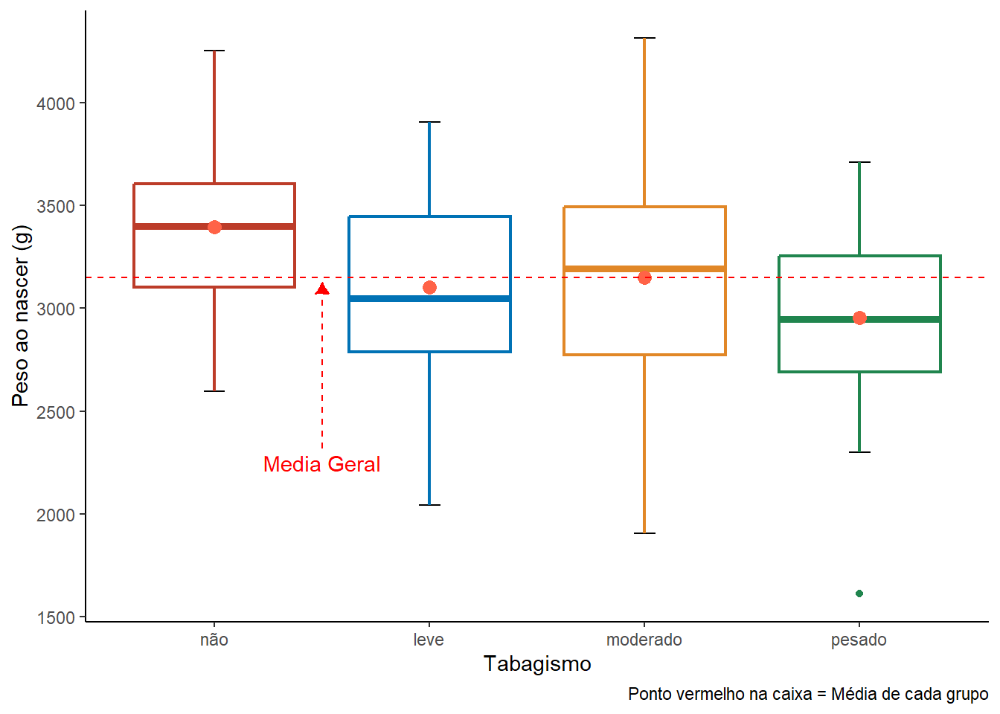
Observa-se que há uma tendência de o peso ao nascer diminuir à medida que quantidade de cigarros fumados aumenta. Entretanto, esta diferença pode ser pelo acaso.
13.3.2 Definição das hipóteses estatísticas
Para testar a igualdade entre as médias, \(H_{0}: \mu_{1} = \mu_{2} = \mu_{3} = \mu_{4}\), supondo homocedasticidade, isto é, as variâncias \(σ_1^2=σ_2^2=σ_3^3=σ_4^2\).
A hipótese alternativa, \(H_1\), diz que, pelo menos, uma das médias é diferente das demais. Ela não é unilateral ou bilateral, é multifacetada porque permite qualquer relação que não seja todas as médias iguais. Por exemplo, a \(H_1\) inclui o caso em que \(μ_1=μ_2=μ_3\), mas \(μ_4\) tem um valor diferente.
13.3.3 Definição da regra de decisão
O nível significância, \(\alpha\), geralmente escolhido é igual a 0,05. A distribuição da estatística do teste, sob a \(H_{0}\), é a distribuição F. O número de graus de liberdade total \((n – 1)\) é dividido em dois componentes:
- Grau de liberdade do numerador (ENTRE) é dado por \(gl_{E} = k - 1\), onde k é o número de grupos.
- Grau de liberdade do denominador (DENTRO ou residual) é dado por \(gl_{D} = n - k\), onde, \(n = \sum n_{i}\).
No exemplo, para um \(\alpha = 0,05\), tem-se:
alpha <- 0.05
k <- length(resumo$media)
n <- nrow(dados)
glE <- k - 1
glE[1] 3glD <- n - k
glD[1] 196Com esses dados, usando a a função qf()calcula-se o valor crítico de F (Figura 13.7) que é igual:
Fc <- qf(1 - alpha, glE, glD)
round(Fc, 2)[1] 2.65Portanto, se
\[ |F_{calculado}| < |F_{crítico}| \to não \quad se \quad rejeita \quad H_{0} \\F_{calculado}| \ge F_{crítico}| \to rejeita-se \quad H_{0} \]
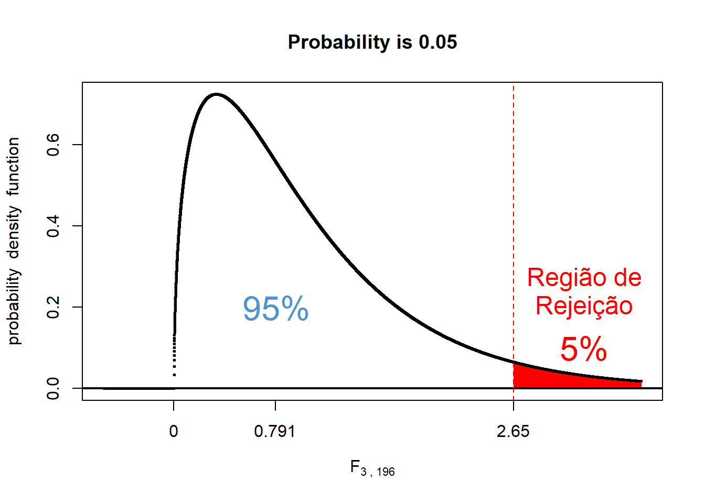
13.3.4 Teste Estatístico
A estatística de teste é obtida calculando duas estimativas da variância populacional, \(\sigma^2\): a variância entre os grupos (\(s_{E}^2\)) e a variância dentro dos grupos (\(s_{D}^2\)).
A variância entre os grupos também é chamada de quadrado médio entre os grupos (\(QM_{E}\)) e é igual a soma dos quadrados entre (\(SQ_{E}\)) ou do fator dividida pelos graus de liberdade entre:
\[ QM_{E} = \frac{SQ_{E}}{gl_{E}} \]
A variância dentro dos grupos é também denominada de quadrado médio dentro dos grupos ou residual (\(QM_{D}\)) e é igual a soma dos quadrados dentro dividida pelos graus de liberdade dentro:
\[ QM_{D} = \frac {SQ_{D}}{gl_{D}} \]
A variância entre os grupos, \(QM_{E}\), dá uma estimativa de \(\sigma^2\) com base na variação entre as médias das amostras extraídas de diferentes populações. Para o exemplo das quatro categorias de tabagismo durante a gestação, o \(QM_{E}\) será baseado nos valores das médias dos pesos dos recém-nascidos nos quatro grupos diferentes. Se as médias de todas as populações em consideração forem iguais, as médias das respectivas amostras ainda serão diferentes, mas a variação entre elas deverá ser pequena e, consequentemente, espera-se que o valor do \(QM_{E}\) seja pequeno. No entanto, se as médias das populações consideradas não são todas iguais, espera-se que a variação entre as médias das respectivas amostras seja grande e, consequentemente, o valor de \(QM_{E}\) seja grande.
A variância dentro das amostras, \(QM_{D}\), dá uma estimativa de \(\sigma^2\) com base na variação dos dados de diferentes amostras. Para o exemplo das quatro categorias de tabagismo durante a gestação, o \(QM_{D}\) será baseado nas médias individuais dos pesos dos recém-nascidos incluídos nas quatro amostras retiradas de quatro populações. O conceito de \(QM_{D}\) é semelhante ao conceito de desvio padrão conjugado ou agrupado, \(s_{o}\), para duas amostras.
A estatística de teste é, como visto, a razão das variâncias entre e dentro do grupo. Dessa maneira,
\[ F = \frac {s_{E}^2}{s_{D}^2} = \frac {\frac {SQ_{E}}{gl_{E}}}{\frac {SQ_{D}}{gl_{D}}} = \frac {QM_{E}}{QM_{D}} \]
13.3.4.1 Avaliação dos pressupostos do teste
Ao realizar um teste de ANOVA de um fator deve-se assumir que:
- As populações das quais as amostras são retiradas são normalmente distribuídas;
- As populações das quais as amostras são retiradas têm a mesma variância (homocedasticidade);
- Amostras aleatórias e independentes;
- Todos os grupos devem ter tamanho amostral adequado. Grupos com menos de 10 participantes são problemáticos por reduzirem a precisão da média. Na prática, deve-se evitar menos de 30 participantes. A relação entre os grupos não deve ser maior do que 1:4 (4);
- Não devem existir valores atípicos (outliers);
- A mensuração dos dados deve ser em nível intervalar ou de razão.
Portanto, antes iniciar com o teste de hipótese, verifica-se se as suposições mencionadas para o teste de hipótese ANOVA unidirecional foram atendidas. As amostras são amostras aleatórias e independentes. Isto já é um bom começo!
Avaliação da normalidade
Verifica-se a premissa de normalidade, usando o teste de Shapiro-Wilk para os múltiplos grupos e desenhando um gráfico de probabilidade normal (gráficos Q-Q) para cada grupo.
dados %>%
dplyr::group_by(fumo) %>%
shapiro_test(pesoRN)# A tibble: 4 × 4
fumo variable statistic p
<ord> <chr> <dbl> <dbl>
1 não pesoRN 0.976 0.385
2 leve pesoRN 0.979 0.499
3 moderado pesoRN 0.985 0.776
4 pesado pesoRN 0.971 0.257Para o gráfico Q-Q (Figura 13.8), pode ser usado a função ggqqplot () do pacote ggpubr que produz um gráfico QQ normal com uma linha de referência, acompanhada de area sombreada, correspondente ao IC95%.
ggpubr::ggqqplot(dados,
x="pesoRN",
facet.by = "fumo") +
labs(y = "Peso ao nascer (g) (m)",
x = "Quantis teóricos")
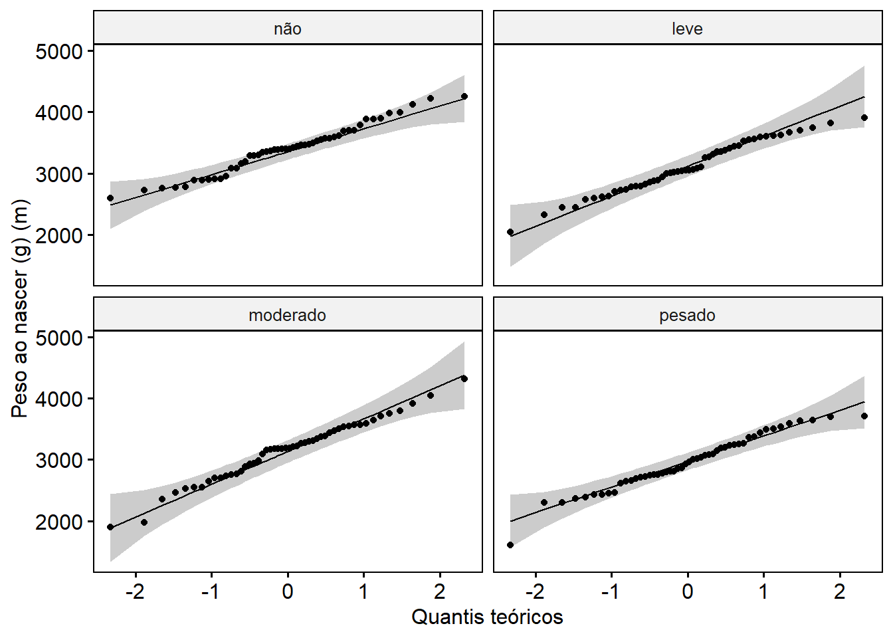
O resultado do teste de Shapiro-Wilk entregou todos os resultados com valor P acima de 0.05 e os gráficos Q-Q, não são perfeitos, mas pode-se assumir que os dados para cada grupo caem aproximadamente em uma linha reta.
Avaliação da homogeneidade das variâncias
Em seguida, testa-se a suposição de que as variâncias são iguais, usando o Teste de Levene através da função leveneTest () do pacote car.
car::leveneTest(pesoRN~fumo, center = mean, data = dados)Levene's Test for Homogeneity of Variance (center = mean)
Df F value Pr(>F)
group 3 0.6306 0.5961
196 O teste de Levene exibe como resultado um valor P > 0,05, mostrando que não é possível rejeitar a \(H_0\) de igualdade das variâncias.
Verificação da presença de outliers
Pode-se aqui, além de verificar nos boxplots, usar a função by_group() do pacote dplyr junto com a função identify_outliers() do pacote rstatix :
dados %>%
dplyr::group_by(fumo) %>%
rstatix::identify_outliers(pesoRN)# A tibble: 1 × 5
fumo id pesoRN is.outlier is.extreme
<ord> <dbl> <dbl> <lgl> <lgl>
1 pesado 168 1611. TRUE FALSE Como mostrado nos boxplots, existe um valor atípico, ou seja, está abaixo de 1,5 IIQ. Entretanto, ele não é extremo (> 3 IIQ).
Da mesma maneira que no teste t, os pressupostos têm mais importância em grupos pequenos e desiguais. Para o exemplo em análise, os pressupostos foram verificados e pode-se assumir que os grupos são independentes e as médias têm distribuição normal e existe homocedasticidade, além disso, os grupos têm o mesmo tamanho (n = 50). Portanto, a análise pode ser continuada.
O que fazer se os pressupostos são violados?
Se a homogeneidade da variância é o problema, um teste possível de ser implementado no R é o F de Welch, aplicando a funçãowelch.test(), incluída no pacote onewaytests (5). Existem também testes não paramétricos, como o Teste de Kruskal-Wallis, que será visto mais adiante (Seção 17.6).
13.3.4.2 Execução do teste estatístico
Para realizar um teste de hipótese ANOVA unidirecional, aplica-se a função aov() do R base. Esta função espera a chamada notação de fórmula, portanto, os dados são incluídos separando as duas variáveis de interesse separadas por ~ (til) e os dados, no qual as variáveis especificadas na fórmula, são encontradas. Além da fórmula e dos dados, a função aov() pode necessitar outros argumentos:
- effect.size \(\to\) tamanho do efeito a ser calculado e mostrado nos resultados da ANOVA. Os valores permitidos podem ser “ges” (eta ao quadrado) ou “pes” (eta parcial ao quadrado) ou ambos. O padrão é “ges”;
- contrasts \(\to\) uma lista de contrastes a ser usada para alguns dos fatores da fórmula
modelo.aov <- aov(pesoRN ~ fumo, dados)
summary(modelo.aov) Df Sum Sq Mean Sq F value Pr(>F)
fumo 3 5030606 1676869 8.482 2.52e-05 ***
Residuals 196 38748837 197698
---
Signif. codes: 0 '***' 0.001 '**' 0.01 '*' 0.05 '.' 0.1 ' ' 1A saída, liberada pela função summary(), é bem reduzida, relatando as informações específicas da Tabela da ANOVA, a estatística F junto com o valor P e os graus de liberdade, soma dos quadrados (Sum Sq) e quadrados médios (Mean Sq), que com frequência se necessita para o relatório do modelo.
A variância entre os grupos também é chamada de quadrado médio entre os grupos e é igual à soma dos quadrados entre ou do fator dividida pelos graus de liberdade entre. A variância dentro dos grupos é também denominada de quadrado médio dentro dos grupos ou residual e é igual à soma dos quadrados dentro dividida pelos graus de liberdade dentro.
A ANOVA detectou um efeito significativo do fator, que neste caso é o fumo, o valor \(F_{calculado} = 8,48 > F_{crítico} = 2,65\) e o valor P < 0,0001.
Pode-se simplesmente relatar isso e encerrar, mas é provável que se queira saber quais grupos diferem uns dos outros. Lembre-se de que não se pode apenas inferir isso a partir de uma visão dos dados, existem testes estatísticos para ajudar a entender as diferenças dos grupos.
13.3.5 Testes post-hoc
Os testes de comparações múltiplas constituem-se em uma análise após a realização da ANOVA. Se houve uma diferença, indicada pela ANOVA, os testes de comparações múltiplas ou também conhecidos como teste post hoc, ajudam a quantificar as diferenças entre os grupos para determinar quais grupos diferem significativamente uns dos outros.
Aqui será usado o HSD de Tukey, que é conservador. HSD vem da expressão em inglês - Honest Significant Difference. Este teste requer um objeto aov no qual executa seu procedimento, que chamaremos de pwc. O procedimento de Tukey HSD executará uma comparação de pares de todas as combinações possíveis dos grupos e testará esses pares para diferenças significativas entre suas médias, tudo enquanto ajusta o valor P a um limite superior de significância para compensar o fato de que muitos testes estatísticos estão sendo realizados e a probabilidade de um falso positivo aumenta com o aumento do número de testes. A função a ser usada é a tukey_hsd(), do pacote rstatix.
pwc <- rstatix::tukey_hsd (modelo.aov)
pwc# A tibble: 6 × 9
term group1 group2 null.value estimate conf.low conf.high p.adj
* <chr> <chr> <chr> <dbl> <dbl> <dbl> <dbl> <dbl>
1 fumo não leve 0 -292. -523. -61.8 0.00654
2 fumo não moderado 0 -243. -474. -12.8 0.0341
3 fumo não pesado 0 -441. -671. -210. 0.00000915
4 fumo leve moderado 0 49.0 -181. 279. 0.946
5 fumo leve pesado 0 -149. -379. 81.9 0.342
6 fumo moderado pesado 0 -198. -428. 32.8 0.121
# ℹ 1 more variable: p.adj.signif <chr>Com base nos valores P < 0,05 tem-se três combinações de grupos que diferem: leve-não, moderado-não e pesado-não. Isto mostra que o grupo que difere é o das mães não fumantes.
Pode-se visualizar isso na Figura 13.9 obtida com a função plot(), usando os resultados da função TukeyHSD() disponível no R base. Esta função gera o teste de Tukey com as diferença entre os pares e os intervalos de confiança que permitem a construção do gráfico. A função par()é empregada para adaptar as margens da figura ao tamanho da mesma e depois é usada novamente para retornar ao padrão par(mar=c(5.1, 4.1, 4.1, 2.1)). O argumento mar é um vetor numérico que define os tamanhos das margens na seguinte ordem: inferior, esquerda, superior e direita.
par(mar=c(3,8,3,3)) # Adaptar o tamanho das margens
plot(TukeyHSD(modelo.aov, conf.level = 0.95), las = 1)
par(mar=c(5.1, 4.1, 4.1, 2.1)) # Retorna as margens ao padrão
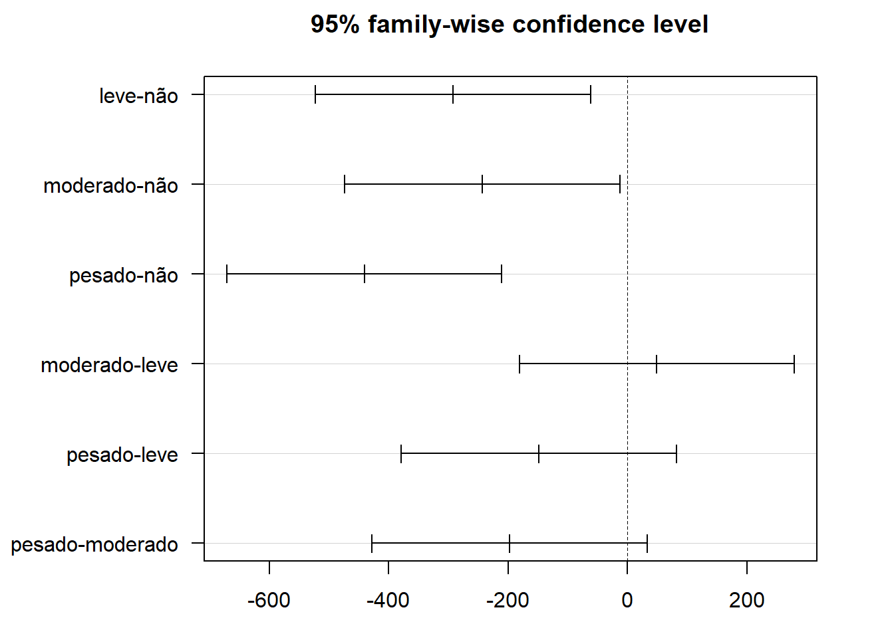
13.3.6 Tamanho do efeito
Uma das medidas de tamanho de efeito mais comumente relatadas para a ANOVA é o eta ao quadrado (\(\eta^2\)), que é um índice da força da associação entre um fator e uma variável dependente. Eta ao quadrado é a proporção da variação total atribuível ao fator. É calculado como a razão da variância do fator para a variância total e os valores variam de 0 a 1.
Esta medida pode ser obtida com o pacote effectsize (6), usando a função eta_squared()com um objeto da classe tipo modelo.aov.
effectsize::eta_squared (modelo.aov, partial = FALSE)# Effect Size for ANOVA (Type I)
Parameter | Eta2 | 95% CI
-------------------------------
fumo | 0.11 | [0.05, 1.00]
- One-sided CIs: upper bound fixed at [1.00].O eta quadrado é uma estimativa tendenciosa da força da associação, na medida em que superestima os efeitos, especialmente para amostras pequenas. Uma outra medida do tamanho do efeito menos tendenciosa é o ômega ao quadrado (\(\omega^2\)). O ômega ao quadrado é uma medida corrigida, menos enviesada e menos inflacionada. Ela pode ser calculada com a função omega_squared(), também do pacote effectsize:
effectsize::omega_squared (modelo.aov, partial = FALSE)# Effect Size for ANOVA (Type I)
Parameter | Omega2 | 95% CI
---------------------------------
fumo | 0.10 | [0.04, 1.00]
- One-sided CIs: upper bound fixed at [1.00].Apesar de ser controverso, pode-se seguir a orientação da Tabela 13.1), para a interpretação (7):
| Resultado | Effectsize |
|---|---|
| 0.01 | pequeno |
| 0,06 | médio |
| 0,14 | grande |
13.3.7 Conclusão
O peso dos recém-nascidos foi estatisticamente diferente entre os diferentes grupos, F(3, 196) = 8,48, P = 0.0000252, \(\eta^2\) = 0,11.
As análises post-hoc de Tukey revelaram que o peso dos recém-nascidos a termo no grupo das gestantes não fumantes apresentou uma diferença estatisticamente significativa do grupo de tabagismo leve (-292 g, IC95%: -523 a -62 g; P = 0,0065); do grupo de tabagismo moderado (-243 g, IC95%: -474 a -13 g; P = 0,0341) e do grupo de tabagismo pesado (-441 g, IC95%: -671 a -210 g; P < 0,0001), mas entre os grupos de fumantes não houve diferença estatisticamente significativa.
13.3.7.1 Apresentação dos resultados
Serão apresentados boxplots (Figura 13.10)), com ggboxplot(), do pacote ggpubr, utilizando, para cores, a pallete = "jama", do pacote ggsci. Para adicionar teste estatístico, usou-se a função get_test_label() e para o teste post hoc, a função get_pwc_label(), ambas do pacote rstatix.
tab.aov <- anova_test(dados,
pesoRN ~ fumo,
type = 2)
pwc <- tukey_hsd(dados,pesoRN~fumo)
pwc <- pwc %>% add_xy_position (x = "fumo")
p <- ggplot2::ggplot(dados, aes(x=fumo, y=pesoRN)) +
stat_boxplot(geom = "errorbar",
width = 0.1) +
geom_boxplot(aes(color = fumo), size = 0.8) +
scale_color_nejm() +
labs(x = "Tabagismo",
y = "Peso ao nascer (g)",
subtitle = get_test_label (tab.aov, detailed = TRUE),
caption = get_pwc_label(pwc)) +
stat_pvalue_manual (pwc,
label = "p.adj.signif",
label.size = 3.5,
hide.ns = TRUE) +
theme (text = element_text (size = 12)) +
theme_classic()
p +
theme(legend.position = "none")
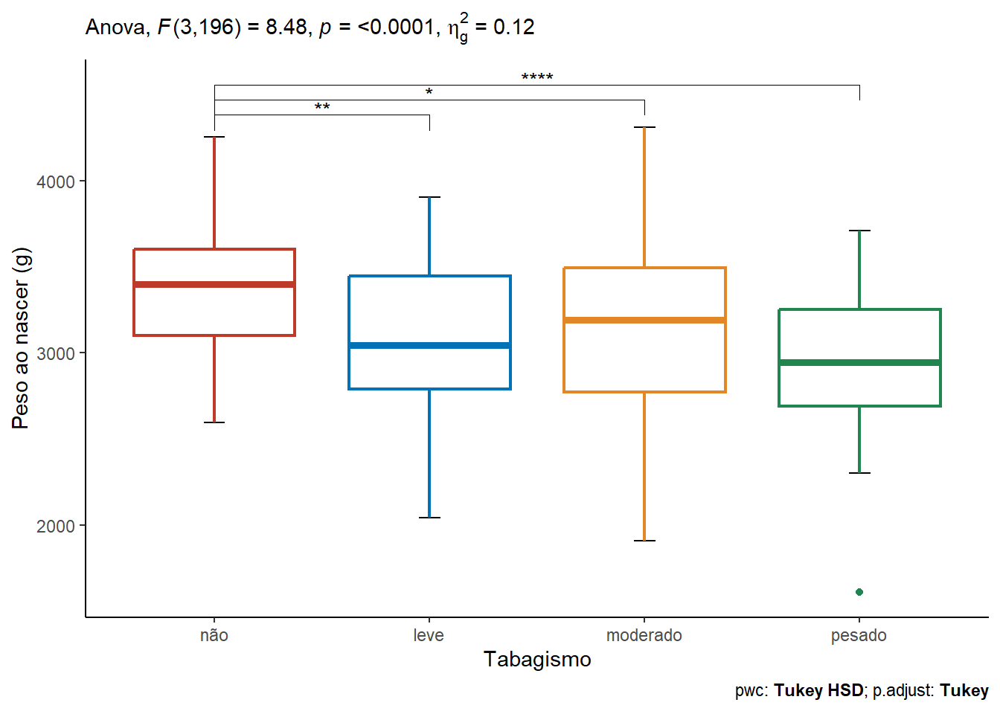
13.4 ANOVA de dois fatores
A ANOVA de dois fatores é uma extensão da ANOVA de um fator. Neste tipo de ANOVA, ao invés de observar o efeito de um fator sobre a variável desfecho contínua, é analisado simultaneamente o efeito de duas variáveis de agrupamento. Outros sinônimos para a ANOVA de dois fatores são: ANOVA fatorial ou ANOVA de duas vias.
Quando se tem dois ou mais fatores, além de observar o efeito desses fatores sobre a variável desfecho, há necessidade de verificar se eles não interagem entre si. Portanto, é um objetivo importante da ANOVA fatorial avaliar se há um efeito de interação estatisticamente significativo entre os fatores.
13.4.1 Dados usados nesta seção
O conjunto de dados dadosMemoria.xlsx que contém informações de um teste de memória realizado em homens e mulheres, após o consumo de álcool, categorizado em três grupos (nenhum, 3 latas e 6 latas de cerveja tipo pilsen com 4,5% de álcool). O grupo sem consumo de álcool (cerveja sem álcool) serve como controle. Após o consumo de álcool, foi avaliada a memória para a realização de uma tarefa cognitiva.
Neste exemplo, modificado de Andy Field (8), o efeito do álcool sobre a memória do indivíduo é a variável focal, a principal preocupação. Acredita-se que o efeito de álcool depende de outro fator, sexo, que são chamados de variáveis moderadoras.
Para baixar o banco de dados, clique aqui. Salve o mesmo no seu diretório de trabalho.
13.4.1.1 Leitura dos dados
A leitura será feita com a função read_excel() do pacote readxl e serão atribuídos a um objeto de nome dados e verificada a sua estrutura com a função str().
dados <- readxl::read_excel("dados/dadosMemoria.xlsx")
str(dados)tibble [48 × 4] (S3: tbl_df/tbl/data.frame)
$ sexo : chr [1:48] "Feminino" "Feminino" "Feminino" "Feminino" ...
$ alcool : chr [1:48] "nenhum" "nenhum" "nenhum" "nenhum" ...
$ escore : num [1:48] 65 70 60 60 60 55 60 55 70 65 ...
$ latencia: num [1:48] 2.5 3 1.4 1.5 1.8 2.2 2.3 1.6 3.9 4 ...13.4.1.2 Exploração e sumarização dos dados
Na saída da função str(), verifica-se que as variáveis alcool e sexo estão como <chr>e o ideal é que estejam como fatores. Portanto, serão colocadas as categorias do consumo de álcool como fator e em uma ordem lógica (nenhum consumo, três latas e 6 latas). A variável sexo será apenas colocada como fator porque não tem uma ordem lógica. As demais variáveis, id (identificação) e escore(escore de memória) podem permanecer com dbl (numérica).
dados$alcool <- factor(dados$alcool,
levels = c("nenhum",
"3 latas",
"6 latas"))
dados$sexo <- as.factor(dados$sexo)A sumarização dos dados será feita com as funções group_by() e summarise() do pacote dplyr para a variável escore por grupos, sexo e alcool.
alpha <- 0.05
resumo <- dados %>%
dplyr::group_by(sexo, alcool) %>%
dplyr::summarise(n = n(),
media = mean(escore, na.rm=TRUE),
dp = sd(escore, na.rm=TRUE),
ep = dp/sqrt(n),
me = qt((1 - alpha/2),n-1)*ep,
linf = media - me,
lsup = media + me)
resumo# A tibble: 6 × 9
# Groups: sexo [2]
sexo alcool n media dp ep me linf lsup
<fct> <fct> <int> <dbl> <dbl> <dbl> <dbl> <dbl> <dbl>
1 Feminino nenhum 8 60.6 4.96 1.75 4.14 56.5 64.8
2 Feminino 3 latas 8 62.5 6.55 2.31 5.47 57.0 68.0
3 Feminino 6 latas 8 57.5 7.07 2.5 5.91 51.6 63.4
4 Masculino nenhum 8 66.9 10.3 3.65 8.64 58.2 75.5
5 Masculino 3 latas 8 66.9 12.5 4.43 10.5 56.4 77.3
6 Masculino 6 latas 8 35.6 10.8 3.83 9.06 26.6 44.7Os dados estão estruturados com um desenho onde as células tem um formato 2 x 3 (Tabela 13.2) com os fatores sexo e alcool e 8 indivíduos em cada célula. O fator sexo tem dois níveis (feminino e masculino) e o fator alcool tem três níveis (nenhum, 3 latas e 6 latas). Observe que o desenho é balanceado, pois todas as células têm o mesmo número de indivíduos. Esta estrutura é o caso mais simples; desenhos não balanceados são mais complexos.
| nenhum | 3 latas | 6 latas | |
|---|---|---|---|
| Feminino | 8 | 8 | 8 |
| Masculino | 8 | 8 | 8 |
13.4.1.3 Visualização gráfica dos dados
Para visualizar os dados, será construido um gráfico com boxplots (Figura 13.11), usando o pacote ggpubr(9), com a função ggboxplot(), que fornece algumas funções fáceis de usar para criar e personalizar gráficos prontos para publicação baseados em ‘ggplot2’. O boxplot irá plotar os dados agrupados pelas combinações dos níveis dos dois fatores.
ggpubr::ggboxplot (dados,
bxp.errorbar = TRUE,
bxp.errorbar.width = 0.2,
x = "alcool",
y = "escore",
color = "black",
fill = "sexo",
palette = "bmj",
ylab = "Escore da Memória",
xlab = "",
legend.title = "Sexo",
legend = "top") +
theme (text = element_text (size = 12))
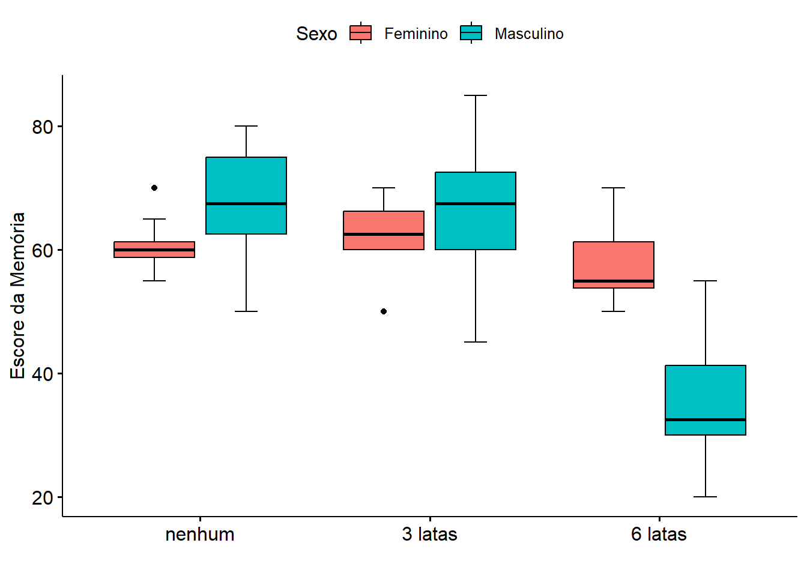
Além dos boxplot, é interessante desenhar um gráfico de linhas (Figura 13.12)) que plota a média (ou outro resumo) da variável escore (resposta) para combinações bidirecionais de fatores, ilustrando assim possíveis interações. Aqui, pode-se usar a função ggline(), também pertencente ao interessante pacote ggpubr.
ggpubr::ggline(dados,
x = "alcool",
y = "escore",
color = "sexo",
size = 0.7,
linetype = "dashed",
position = position_dodge(width = 0.2),
add = "mean_ci",
palette = c("red", "dodgerblue4"))
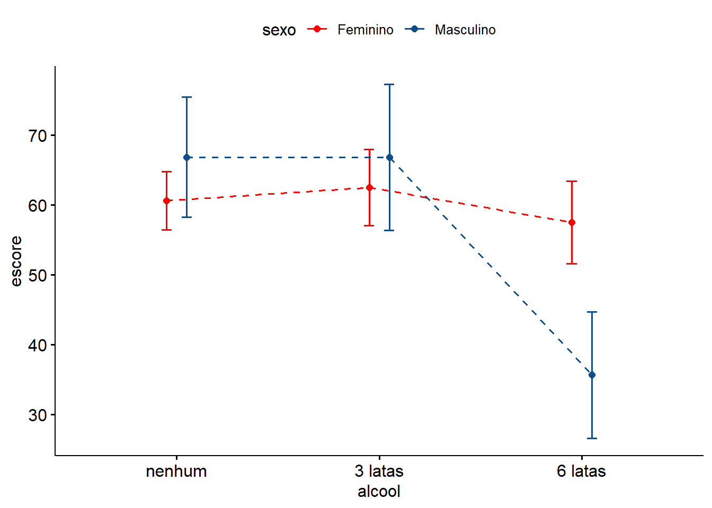
O gráfico sugere um possível efeito do álcool sobre a memória, bem como uma interação entre os sexos.
13.4.2 Hipóteses estatísticas
Como mencionado acima, uma ANOVA de duas vias é usada para avaliar simultaneamente o efeito de duas variáveis categóricas em uma variável quantitativa contínua. Ela é chamada de ANOVA de duas vias porque compara grupos formados por duas variáveis categóricas independentes.
No exemplo, o objetivo é saber se a memória depende da álcool e/ou do sexo. Em particular, estamos interessados em:
- medir e testar a relação entre a alcool e a memória,
- medir e testar a relação entre sexo e memória, e
- possivelmente verificar se a relação entre álcool e memória é diferente para mulheres e homens (o que é equivalente a verificar se a relação entre sexo e memória depende da álcool)
As duas primeiras relações são chamadas de efeitos principais, enquanto o item 3 é conhecido como efeito de interação.
Os efeitos principais testam se pelo menos um grupo é diferente de outro (durante o controle da outra variável independente). Por outro lado, o efeito de interação tem como objetivo testar se a relação entre duas variáveis difere dependendo do nível de uma terceira variável. Em outras palavras, se a variação entre a resposta e a primeira variável categórica não depender das modalidades da segunda variável categórica, então não há interação entre as duas variáveis. Se, ao contrário, houver uma modificação dessa variação, seja por um aumento no efeito da primeira variável, seja por uma diminuição, então há uma interação.
Voltando ao exemplo, tem-se os seguintes testes de hipótese:
Efeito principal do sexo no escore de memória:
\(H_{0}\): o escore de memória médio é igual entre mulheres e homens.
\(H_{1}\): o escore de memória médio é diferente entre mulheres e homens.
Efeito principal do álcool no escore de memória:
\(H_{0}\): o escore de memória médio é igual entre as categorias de ingesta de álcool.
\(H_{1}\): o escore de memória médio é diferente entre as categorias de ingesta de. álcool
Interação entre sexo e álcool:
\(H_{0}\): não há interação entre sexo e álcool, o que significa que a relação entre álcool e memória é a mesma para mulheres e homens (da mesma forma, a relação entre sexo e memória é a mesma para todas as três categorias de ingesta de álcool).
\(H_{1}\): há interação entre sexo e álcool, o que significa que a relação entre álcool e memória é diferente para mulheres e homens (da mesma forma, a relação entre sexo e memória depende da ingesta de álcool).
13.4.3 Pressupostos do modelo
Para usar uma ANOVA de duas vias, os dados devem atender a certos pressupostos. A ANOVA de duas vias faz todas as suposições usuais de um teste paramétrico de diferença:
- Independência de observações
As variáveis respostas não devem ser dependentes umas das outras (ou seja, uma não deve causar a outra). Isso é impossível de testar com variáveis categóricas - só pode ser garantido por um bom projeto experimental.
Além disso, a variável dependente deve representar observações únicas - não devem ser agrupadas em locais ou indivíduos. Se esta premissa for violada, você pode incluir uma variável de bloqueio e/ou usar uma ANOVA de medidas repetidas.
- Normalidade
Variável desfecho normalmente distribuída em todos os grupos.
- Ausência de valores atípicos (outliers)
Um valor aberrante ou valor atípico, é uma observação que apresenta um grande afastamento das demais da série, \(\pm 1,5\) o intervalo interquartil (IIQ) e extremo se estiver \(\pm 3\) IIQ. A existência de outliers implica, tipicamente, em prejuízos à interpretação dos resultados.
- Homogeneidade de variância (homocedasticidade)
A variação em torno da média para cada grupo sendo comparado deve ser semelhante entre todos os grupos. Se os dados não atenderem a essa suposição, é possível usar uma alternativa não paramétrica, como o teste de Kruskal-Wallis.
13.4.4 Verificação dos pressupostos nos dados brutos
Existe uma discussão se os pressupostos devem ser avaliados nos dados brutos ou apenas nos resíduos. Aqui serão realizadas as duas abordagens que frequentemente resultam no mesmo resultado.
13.4.4.1 Normalidade
A variável dependente (escore) deve apresentar distribuição aproximadamente normal dentro de cada grupo. Os grupos aqui serão formados pela combinação das duas variáveis independentes (sexo e alcool). A normalidade será avaliada pelo teste de Shapiro-Wilk, com a função shapiro_test() do pacote rstatix (10), separando os grupos com a função group_by() do pacote dplyr, encadeadas com o operador pipe (%>%):
dados %>%
dplyr::group_by (sexo, alcool) %>%
rstatix::shapiro_test (escore)# A tibble: 6 × 5
sexo alcool variable statistic p
<fct> <fct> <chr> <dbl> <dbl>
1 Feminino nenhum escore 0.872 0.156
2 Feminino 3 latas escore 0.899 0.283
3 Feminino 6 latas escore 0.897 0.273
4 Masculino nenhum escore 0.941 0.622
5 Masculino 3 latas escore 0.967 0.870
6 Masculino 6 latas escore 0.951 0.720Os resultados suportam a conclusão de não rejeição da hipótese nula de que os dados se ajustam a distribuição normal.
13.4.4.2 Pesquisa de valores atípicos
A forma mais simples de verificar a presença de um valor atípico é observar o boxplot, mostrado anteriormente. Se observa a presença de valores atípicos entre as mulheres que não ingeriram álcool e nas que ingeriram 3 latas de cerveja. Agora, para confirmar esse achado, será usado a função identify_outliers (), do pacote rstatix:
dados %>%
dplyr::group_by (sexo, alcool) %>%
rstatix::identify_outliers(escore)# A tibble: 2 × 6
sexo alcool escore latencia is.outlier is.extreme
<fct> <fct> <dbl> <dbl> <lgl> <lgl>
1 Feminino nenhum 70 3 TRUE TRUE
2 Feminino 3 latas 50 3.2 TRUE FALSE A saída do teste confirma a existência dos dois valores atípicos, sendo um deles extremo, entretanto como estes valores são possíveis e, relativamente, próximos da média do sexo feminino, portanto, causam pouca preocupação, principalmente porque o teste de ANOVA é bastante robusto.
13.4.4.3 Verificação da homogeneidade das variâncias
Para verificar a homocedasticidade, como os dados têm distribuição normal, é possível usar o teste de Levene, o leveneTest() do pacote car (11).
car::leveneTest (escore ~ sexo*alcool,
data = dados,
center = mean)Levene's Test for Homogeneity of Variance (center = mean)
Df F value Pr(>F)
group 5 1.5268 0.2021
42 13.4.5 Verificação dos pressupostos nos resíduos
O modelo da ANOVA pode ser considerado como um modelo de regressão. Desta forma, este modelo de regressão vai usar os dados brutos para criar um modelo de previsão para esses dados. Este modelo de regressão não é perfeito, existe uma diferença entre os valores previstos e os valores observados, são os resíduos. Faz sentido, então, preocupar-se com os resíduos quando se analisa fatores tentando explicar uma variável dependente contínua, como na ANOVA, pensando em uma regressão linear simples.
A ANOVA prevê que todos os valores do grupo sejam iguais a média do grupo. Ou seja, um homem que ingere 3 latas de cerveja tem um valor de seu escore de memória igual ao deste grupo. Por este motivo, fazer a análise dos resíduos é praticamente o mesmo que a análise dos valores brutos.
Para analisar os resíduos (diferença entre os valores observados e o previsto pelo modelo), em primeiro lugar se constrói o modelo da ANOVA com efeito da interação, usando a função lm() do pacote stats, incluído no R base:
mod.int.lm <- lm(formula = escore ~ alcool * sexo,
data = dados)Ao se executar o comando, tem-se a impressão que nada ocorreu, entretanto foi criado o modelo da ANOVA com uma série de variáveis, entre elas os resíduos (residuals). Para observar os resíduos, basta digitar:
mod.int.lm$residuals 1 2 3 4 5 6 7 8 9 10
4.375 9.375 -0.625 -0.625 -0.625 -5.625 -0.625 -5.625 7.500 2.500
11 12 13 14 15 16 17 18 19 20
-2.500 7.500 2.500 -2.500 -2.500 -12.500 -2.500 7.500 12.500 -2.500
21 22 23 24 25 26 27 28 29 30
-2.500 2.500 -7.500 -7.500 -16.875 -11.875 13.125 -1.875 3.125 8.125
31 32 33 34 35 36 37 38 39 40
8.125 -1.875 -21.875 -6.875 18.125 -1.875 3.125 3.125 13.125 -6.875
41 42 43 44 45 46 47 48
-5.625 -5.625 -5.625 19.375 -0.625 -15.625 9.375 4.375 Função summary() fornece um resumo estatístico dos resíduos:
summary(mod.int.lm$residuals) Min. 1st Qu. Median Mean 3rd Qu. Max.
-21.875 -5.625 -0.625 0.000 5.156 19.375 13.4.5.1 Avaliação da normalidade dos resíduos
Uma das suposições de uma ANOVA é que os resíduos são normalmente distribuídos. A normalidade dos resíduos, inicialmente, será verificada, usando o teste de Shapiro-Wilk com a função shapiro.test(), também pertencente ao pacote stats.
shapiro_test (mod.int.lm$residuals)# A tibble: 1 × 3
variable statistic p.value
<chr> <dbl> <dbl>
1 mod.int.lm$residuals 0.982 0.664O teste entrega um valor P > 0.05, indicando que não é possível rejeitar \(H_{0}\) de normalidade dos resíduos.
Uma outra maneira comum de verificar essa suposição é criando um gráfico Q-Q. Se os resíduos forem normalmente distribuídos, os pontos em um gráfico Q-Q ficarão em uma linha diagonal reta. Este gráfico (Figura 13.13) pode ser contruído com a função ggqqplot() do pacote ggpubr.
ggpubr::ggqqplot(mod.int.lm$residuals,
conf.int = TRUE,
shape = 19,
xlab = "Quantis teóricos",
ylab = "Resíduos",
color = "dodgerblue4")
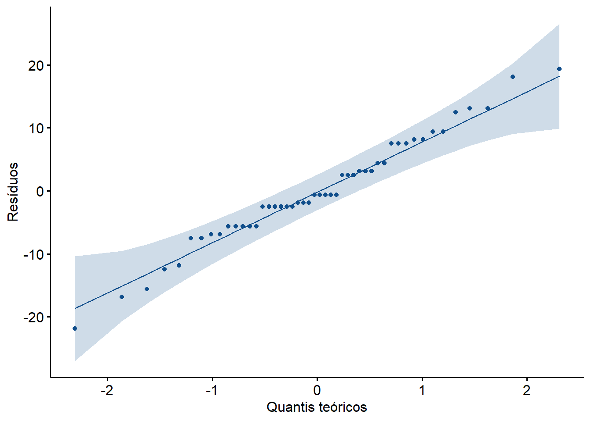
O gráfico QQ de normalidade, mostra que os resíduos seguem aproximadamente uma linha reta, permitindo assumir a normalidade dos mesmos.
13.4.5.2 Pesquisa de valores atípicos nos resíduos
Para a verificação da presença de valores atípicos entre os resíduos, cria-se uma variável que será denominada de residuos (observe o banco de dados com a função str() para ver o acréscimo dessa variável):
dados$residuos <- mod.int.lm$residuals
str (dados)tibble [48 × 5] (S3: tbl_df/tbl/data.frame)
$ sexo : Factor w/ 2 levels "Feminino","Masculino": 1 1 1 1 1 1 1 1 1 1 ...
$ alcool : Factor w/ 3 levels "nenhum","3 latas",..: 1 1 1 1 1 1 1 1 2 2 ...
$ escore : num [1:48] 65 70 60 60 60 55 60 55 70 65 ...
$ latencia: num [1:48] 2.5 3 1.4 1.5 1.8 2.2 2.3 1.6 3.9 4 ...
$ residuos: Named num [1:48] 4.375 9.375 -0.625 -0.625 -0.625 ...
..- attr(*, "names")= chr [1:48] "1" "2" "3" "4" ...Para identificar os outliers, usa-se função identify_outliers() do pacote rstatix:
dados %>%
dplyr::group_by(sexo, alcool) %>%
rstatix::identify_outliers(residuos)# A tibble: 2 × 7
sexo alcool escore latencia residuos is.outlier is.extreme
<fct> <fct> <dbl> <dbl> <dbl> <lgl> <lgl>
1 Feminino nenhum 70 3 9.38 TRUE TRUE
2 Feminino 3 latas 50 3.2 -12.5 TRUE FALSE Observando os resultados com os dados brutos, verifica-se que eles são iguais aos atuais, confirmando, que neste caso, tanto faz avaliar os dados brutos como os resíduos.
13.4.5.3 Verificação da homogeneidade da variância nos resíduos
A verificação da homogeneidade da variância entre os resíduos pode ser feita com o teste de Levene, como feito com os dados brutos.
car::leveneTest (residuos ~ sexo*alcool,
data = dados,
center = mean)Levene's Test for Homogeneity of Variance (center = mean)
Df F value Pr(>F)
group 5 1.5268 0.2021
42 Uma outra maneira de avaliar a homogeneidade da variância, é construir um gráfico diagnóstico4 (Figura 13.14)) do modelo com a função plot(), tipo 1, resíduos versus ajustes (Residuals vs Fitted).
plot(mod.int.lm, 1)
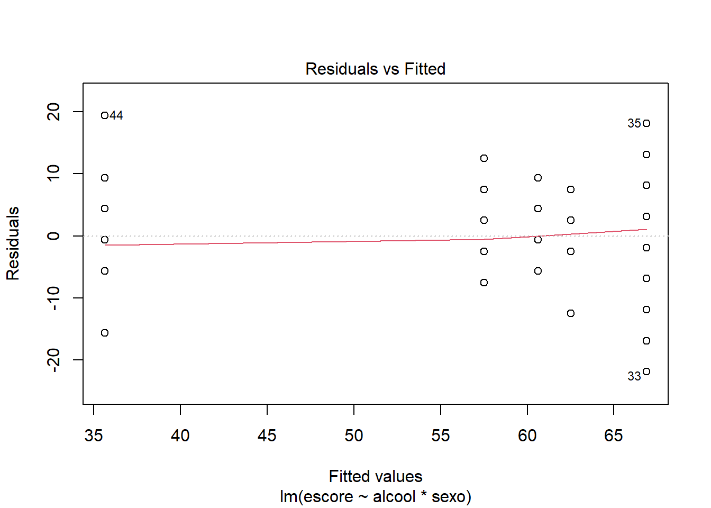
Não há correlações óbvias entre resíduos e valores ajustados (a média de cada grupo) no gráfico abaixo,onde a linha vermelha tracejada (@fig-residuals) segue praticamente uma linha horizontal em torno de 0, o que é bom. Como resultado, pode-se, assim como no teste de Levene, assumir que as variâncias são homogêneas.
Verica-se o mesmo ocorrido com a normalidade, os resultados nos resíduos não diferem daqueles realizados com os dados brutos.
13.4.6 Realização do teste de ANOVA de dois fatores
Mostrou-se que praticamente todos os pressupostos foram atendidos, portanto, agora pode-se prosseguir com a implementação da ANOVA de duas vias.
A inclusão de um efeito de interação em uma ANOVA de duas vias não é obrigatória. Entretanto, para evitar conclusões errôneas, recomenda-se verificar primeiro se a interação é significativa ou não e, dependendo dos resultados, incluí-la ou não.
Se a interação não for significativa, é seguro removê-la do modelo final. Por outro lado, se a interação for significativa, ela deverá ser incluída no modelo final que será usado para interpretar os resultados.
Portanto, deve-se começar com um modelo que inclui os dois efeitos principais (ou seja, sexo e alcool) e a interação:
mod.aov <- aov(formula = escore ~ alcool * sexo,
data = dados)
summary (mod.aov) Df Sum Sq Mean Sq F value Pr(>F)
alcool 2 3332 1666.1 20.065 7.65e-07 ***
sexo 1 169 168.7 2.032 0.161
alcool:sexo 2 1978 989.1 11.911 7.99e-05 ***
Residuals 42 3488 83.0
---
Signif. codes: 0 '***' 0.001 '**' 0.01 '*' 0.05 '.' 0.1 ' ' 1Semelhante a uma ANOVA de uma via, o princípio de uma ANOVA de duas vias baseia-se na dispersão total dos dados e em sua decomposição em quatro componentes:
- a parcela atribuível ao primeiro fator
- a parcela atribuível ao segundo fator
- a parcela atribuível à interação dos dois fatores
- a parte não explicada ou residual.
A soma dos quadrados (coluna Sum Sq) mostra esses quatro componentes. A ANOVA de duas vias consiste em usar um teste estatístico para determinar se cada componente de dispersão (atribuível aos dois fatores estudados e à interação deles) é significativamente maior do que o componente residual. Se esse for o caso, concluímos que o efeito considerado (fator A, fator B ou a interação) é significativo.
Vê-se que a variável alcool explica uma grande parte da variabilidade da memória. Ela é o fator mais importante para explicar essa variabilidade. Os valore P são exibidos na última coluna do resultado acima (Pr(>F)). A partir desses valores conclui-se que, no nível de significância de 5%:
- controlando para o alcool, o escore de memória não é significativamente diferente entre os dois sexos (P = 0,161),
- controlando para o sexo, o escore memória é significativamente diferente (P < 0,0001) para pelo menos uma categoria de ingesta de álcool, e
- a interação entre sexo e álcool (exibida na linha alcool:sexo no resultado) é significativa (P < 0,0001).
Portanto, com base no efeito de interação significativo, se observa que relação entre os escores de memória e álcool é diferente entre os sexos. Como ela é significativa, deve-se mantê-la no modelo e interpretar os resultados desse modelo.
Se, ao contrário, a interação não for significativa (ou seja, se o valor P > 0,05), esse efeito de interação do modelo seria removido. Abaixo, segue o código de uma ANOVA de dois fatores sem interação, chamada de modelo aditivo:
mod.aov2 <- aov(formula = escore ~ alcool * sexo,
data = dados)Na Seção 13.4.5, foi construído um modelo para analisar os resíduos. Este modelo está baseado na semelhança dos modelos de regressão linear (veja Seção 15.3) com o modelo da ANOVA. Observa-se que o código é bem semelhante, usando a fórmula variável dependente ~ variável independentes, o sinal + é usado para incluir variáveis independentes sem interação e o sinal * quando há interação. Ou seja, a ANOVA, como todas as ANOVAs, é na verdade um modelo linear. Observe que o código a seguir, usando a função lm() e após Anova() do pacote car, também funciona e retorna os mesmos resultados 5 :
mod.int.lm <- lm(formula = escore ~ sexo * alcool,
data = dados)
Anova(mod.int.lm)Anova Table (Type II tests)
Response: escore
Sum Sq Df F value Pr(>F)
sexo 168.7 1 2.0323 0.1614
alcool 3332.3 2 20.0654 7.649e-07 ***
sexo:alcool 1978.1 2 11.9113 7.987e-05 ***
Residuals 3487.5 42
---
Signif. codes: 0 '***' 0.001 '**' 0.01 '*' 0.05 '.' 0.1 ' ' 1Observe que a função aov() pressupõe um projeto balanceado, o que significa tamanhos de amostra iguais dentro dos níveis das variáveis de agrupamento independentes. Para verificar se os dados estão balanceados, proceda como mostrado na Tabela 13.2. Os resultados mostram o mesmo número de indivíduos em todas as células, portanto, não importa qual o tipo de ANOVA a ser usado. Os resultados serão iguais. Além disso, aov() usa as somas de quadrados do tipo I.
Para delineamentos não balanceados, ou seja, números desiguais de indivíduos em cada subgrupo, os métodos recomendados são:
- a ANOVA do tipo II, quando não há interação significativa, que pode ser feita no R com
Anova(mod, type = “II”)ouAnova(mod, type = 2), em quemodé o nome do seu modelo salvo, e - a ANOVA do tipo III, quando há uma interação significativa, que pode ser feita no R com
Anova(mod, type = “III”)ouAnova(mod, type = 3).
Fundamentalmente, a diferença entre um método e outro é como o R calcula a soma dos quadrados ao calcular a ANOVA. Quando os dados são balanceados, os três tipos dão o mesmo resultado 6.
13.4.7 Testes post hoc
Neste estágio, chegou-se ao ponto em que se constatou que o efeito principal do sexo não é significativo e que o efeito principal do álcool é significativo. Além disso, mais importante, existe uma interação entre o álcool e o sexo, o efeito do álcool depende do sexo.
Não é possível saber exatamente qual categoria da variável alcool é diferente da outra em termos de escore de memória. Para saber isso, há que comparar cada categoria duas a duas graças aos testes post-hoc, também conhecidos como comparações entre pares (13) (14) (15). Há vários testes post-hoc, sendo os mais comuns o Tukey HSD, que testa todos os pares possíveis de grupos. Será utilizada a função TukeyHSD(), usando como argumento o modelo com interação, mod.aov:
TukeyHSD(mod.aov) Tukey multiple comparisons of means
95% family-wise confidence level
Fit: aov(formula = escore ~ alcool * sexo, data = dados)
$alcool
diff lwr upr p adj
3 latas-nenhum 0.9375 -6.889643 8.764643 0.9544456
6 latas-nenhum -17.1875 -25.014643 -9.360357 0.0000105
6 latas-3 latas -18.1250 -25.952143 -10.297857 0.0000040
$sexo
diff lwr upr p adj
Masculino-Feminino -3.75 -9.058607 1.558607 0.1613818
$`alcool:sexo`
diff lwr upr p adj
3 latas:Feminino-nenhum:Feminino 1.875 -11.726381 15.476381 0.9983764
6 latas:Feminino-nenhum:Feminino -3.125 -16.726381 10.476381 0.9825753
nenhum:Masculino-nenhum:Feminino 6.250 -7.351381 19.851381 0.7432243
3 latas:Masculino-nenhum:Feminino 6.250 -7.351381 19.851381 0.7432243
6 latas:Masculino-nenhum:Feminino -25.000 -38.601381 -11.398619 0.0000306
6 latas:Feminino-3 latas:Feminino -5.000 -18.601381 8.601381 0.8796489
nenhum:Masculino-3 latas:Feminino 4.375 -9.226381 17.976381 0.9277939
3 latas:Masculino-3 latas:Feminino 4.375 -9.226381 17.976381 0.9277939
6 latas:Masculino-3 latas:Feminino -26.875 -40.476381 -13.273619 0.0000080
nenhum:Masculino-6 latas:Feminino 9.375 -4.226381 22.976381 0.3286654
3 latas:Masculino-6 latas:Feminino 9.375 -4.226381 22.976381 0.3286654
6 latas:Masculino-6 latas:Feminino -21.875 -35.476381 -8.273619 0.0002776
3 latas:Masculino-nenhum:Masculino 0.000 -13.601381 13.601381 1.0000000
6 latas:Masculino-nenhum:Masculino -31.250 -44.851381 -17.648619 0.0000003
6 latas:Masculino-3 latas:Masculino -31.250 -44.851381 -17.648619 0.0000003Quando se tem muitos grupos para fazer a comparação, fica mais fácil interpretar, usando gráficos (Figura 13.15):
# Definir as margens do eixo para que os rótulos não sejam cortados
par(mar = c(4.1, 15, 4.1, 2.1))
# Criar intervalo de confiança para cada comparação
plot(TukeyHSD(mod.aov, which = "alcool:sexo"), las = 1)
# Retorna as margens ao padrão
par(mar=c(5.1, 4.1, 4.1, 2.1))
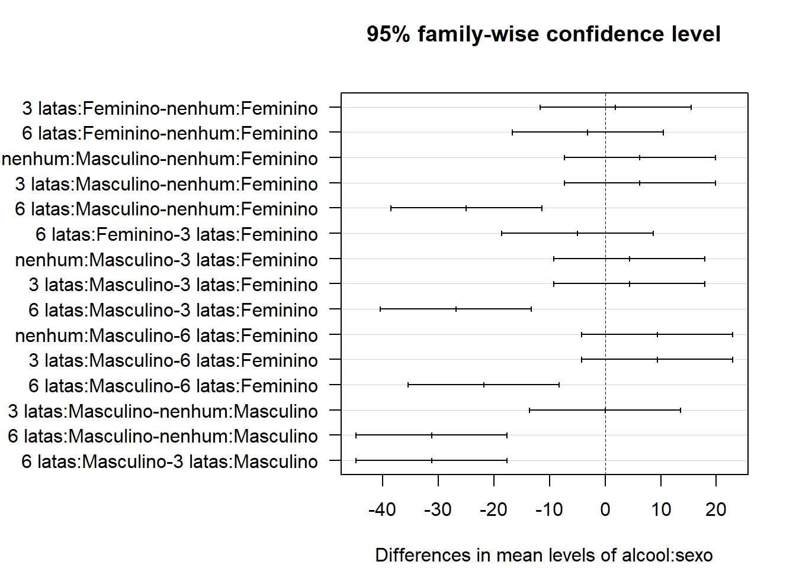
As Saída exibe resultados onde aparece que o consumo de álcool não afetou a memória das mulheres, mas o consumo de 6 latas de cerveja diminuiu o escore de memória dos homens quando comparados com homens que consumiram cerveja sem álcool ou que ingeriram apenas 3 latas de cerveja. Em outras palavras, os termos de interação dizem como o efeito dos álcool muda quando quem o ingere é do sexo masculino ou feminino. O efeito do álcool na memória das mulheres é pequeno, ficando praticamente estável nas três condições. Por outro lado, os homens permanecem estáveis no seu escore de memória quando quantidades pequenas de álcool são ingeridas, declina rapidamente quando ingerem 6 latas de cerveja.
13.4.8 Relatando os resultados de uma ANOVA de dois fatores
Pode-se relatar os resultados da ANOVA de dois fatores da seguinte maneira:
Uma ANOVA de dois fatores foi realizada para avaliar se a memória de homens e mulheres era afetada pelo consumo do álcool avliado em três níveis:
- Não consumiram álcool
- Consumiram 3 latas de cerveja (~ 1L)
- Consumiram 6 latas de cerveja (~ 2L)
Os dados são apresentados como média e desvio padrão, na Tabela 13.3).7
| Sexo | Sem_alcool | Um_litro | Dois_litros |
|---|---|---|---|
| Feminino | 60,6 (5,0) | 62,5 (6,6) | 57,5 (7,1) |
| Masculino | 66,9 (10,3) | 66,9 (12,5) | 35,6 (10,8) |
| Valor P | 0,145 | 0,396 | 0,0003 |
O efeito principal do sexo na memória foi não significativo (F(1,42) = 2,03, P = 0,1614).
Houve um efeito principal significativo de acordo com a quantidade de álcool consumida na memória dos participantes (F(2,42) = 20,07, P <0,0001).
As análises posteriores (teste de Tukey, Figura 13.15) revelaram que a memória não foi afetada nas mulheres pelo consumo de álcool, mas o consumo de 6 latas de cerveja afetou a memória dos homens quando comparados os homens que não consumiram álcool ou que consumiram até 3 latas de cerveja.
Visualização dos resultados:
Serão apresentados gráficos de barra de erro (Figura 13.16), com ggbarplot(), do pacote ggpubr, utilizando, para cores tonalidades de cinza. Para adicionar teste estatístico, usou-se a função get_test_label() e para o teste post hoc, a função get_pwc_label(), ambas do pacote rstatix.
# Construção de um gráfico de barra de erro
be <- ggpubr::ggbarplot(dados,
x = "alcool", y = "escore",
add = "mean_ci",
error.plot = "upper_errorbar",
fill = "sexo",
palette = c("gray60", "gray40"),
position = position_dodge(0.8)) +
theme(legend.key.size = unit(0.3, 'cm')) +
theme(legend.position = "right")
# Comparações por pares (pairwise comparisons)
pwc <- dados %>%
dplyr::group_by(alcool) %>%
rstatix::tukey_hsd(formula = escore ~ sexo)
# Calcular e adicionar as posições x e y.
pwc <- pwc %>%
add_xy_position(fun = "mean_ci",
x = "alcool",
dodge = 0.8)
# Cálculo do teste estatístico com pacote rstatix
anova <- anova_test(mod.aov)
# Acrescentar o teste e o valor P ajustado ao gráfico
be + stat_pvalue_manual(pwc,
label = "p.adj",
tip.length = 0.01,
y.position = 85) +
labs (x = "Ingestão de álcool",
y = "Média escore de memória",
subtitle = rstatix::get_test_label (anova, detailed = TRUE),
caption = rstatix::get_pwc_label(pwc))
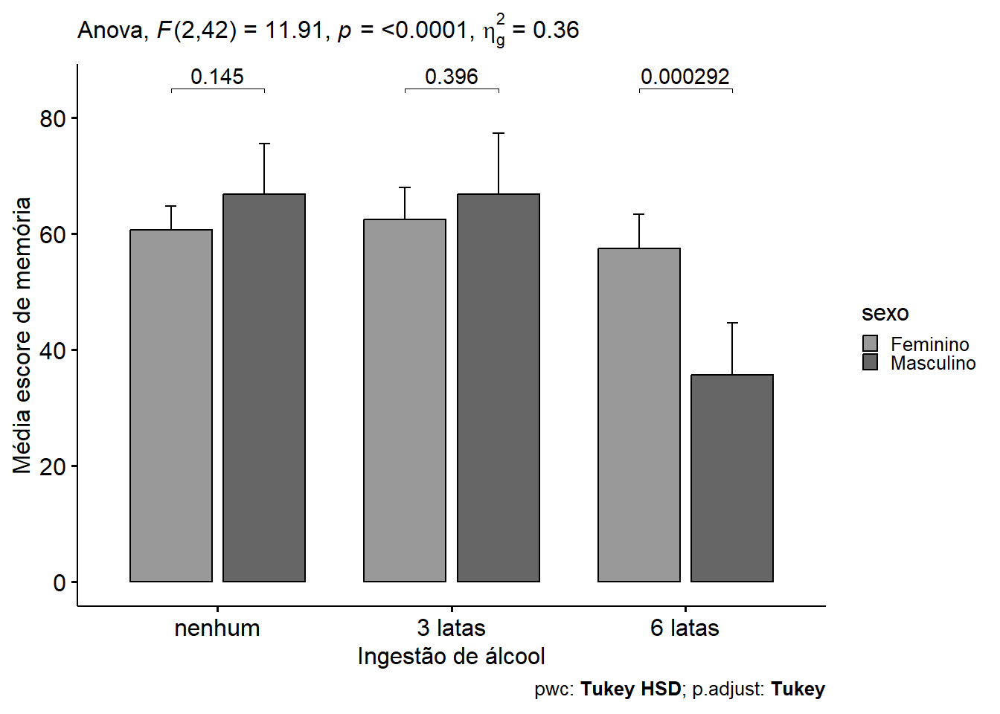
Uma opção, é apresentar os resultados como um gráfico de linhas (Figura 13.17), já mostrado anteriormente , usando a função ggline() do pacote ggpubr, com as cores do periódico Lancet:
# Construção de um gráfico linha
gl <- ggpubr::ggline(dados,
x = "alcool", y = "escore",
add = "mean_ci",
color = "sexo",
size = 0.7,
linetype = "dashed",
palette = "lancet",
position = position_dodge(0.2)) +
theme(legend.key.size = unit(0.3, 'cm')) +
theme(legend.position = "right")
# Comparações por pares (pairwise comparisons)
pwc <- dados %>%
dplyr::group_by(alcool) %>%
rstatix::tukey_hsd(formula = escore ~ sexo)
# Calcular e adicionar as posições x e y.
pwc <- pwc %>%
add_xy_position(fun = "mean_ci",
x = "alcool",
dodge = 0.8)
# Cálculo do teste estatístico com pacote rstatix
anova <- anova_test(mod.aov)
# Acrescentar o teste e o valor P ajustado ao gráfico
gl + stat_pvalue_manual(pwc,
label = "p.adj",
tip.length = 0.01,
y.position = 85) +
labs (x = "Ingestão de álcool",
y = "Média escore de memória",
subtitle = rstatix::get_test_label (anova,
detailed = TRUE),
caption = rstatix::get_pwc_label(pwc))
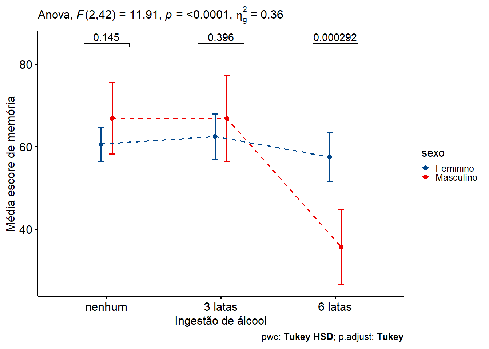
Pode ser usada também para comparar a média de duas populações e o resultado será o mesmo de um teste t para amostras independentes.↩︎
No texto, df1 e df2 (em inglês, df = degree of freedom) foram traduzidos para o português como gl1 e gl2 (gl = graus de liberdade).↩︎
Volte à Seção 6.6 para mais informações sobre o como fazer gráficos no
ggplot2.↩︎Outros gráficos diagnósticos podem ser obtidos para analisar resíduos em um modelo de regressão (12)↩︎
A função
Anova()do pacotecar, usada para testar efeitos principais e de interação em modelos lineares gerais, não deve ser confundida com a funçãoanova(), da base do R, porque esta fornece resultados sequenciais que dependem da ordem em que as variáveis aparecem no modelo.↩︎Para os interessados, pode-se obter maiores informações sobre os diferentes tipos de ANOVA em https://www.r-bloggers.com/2011/03/anova-%E2%80%93-type-iiiiii-ss-explained/↩︎
lembrar que um litro de cerveja (4,5%) = 5 unidades de alcool↩︎